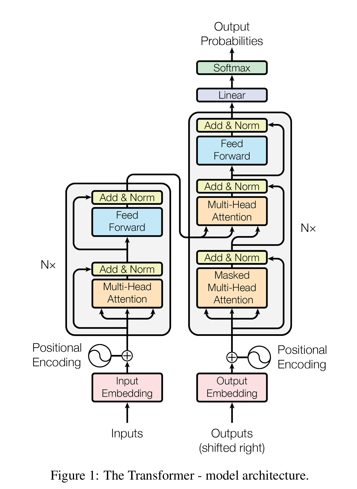
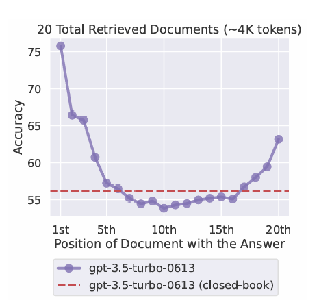
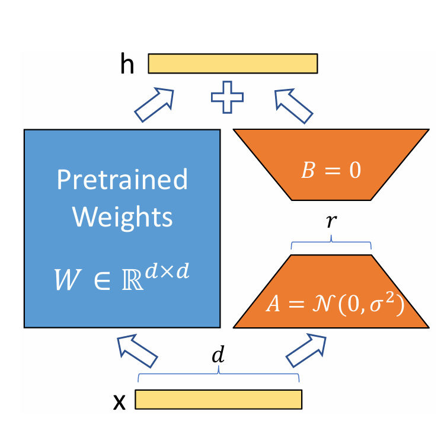
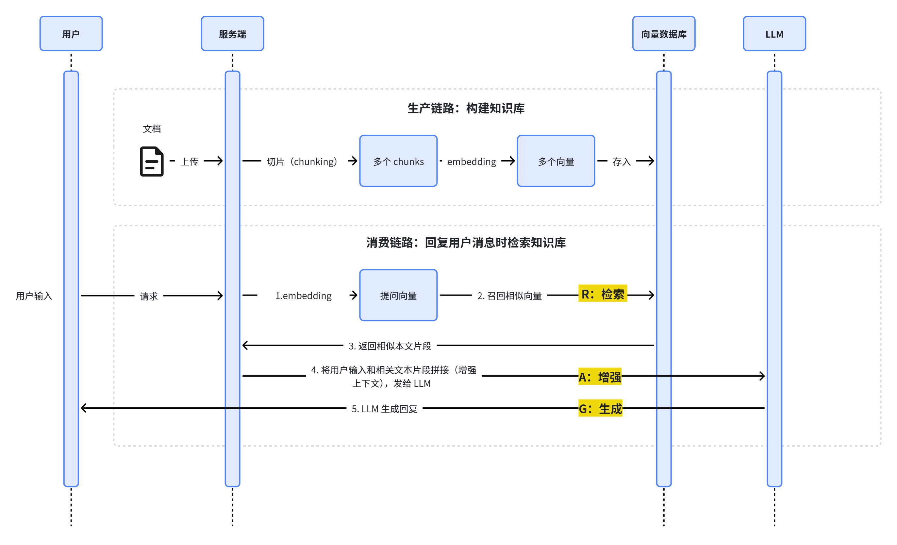
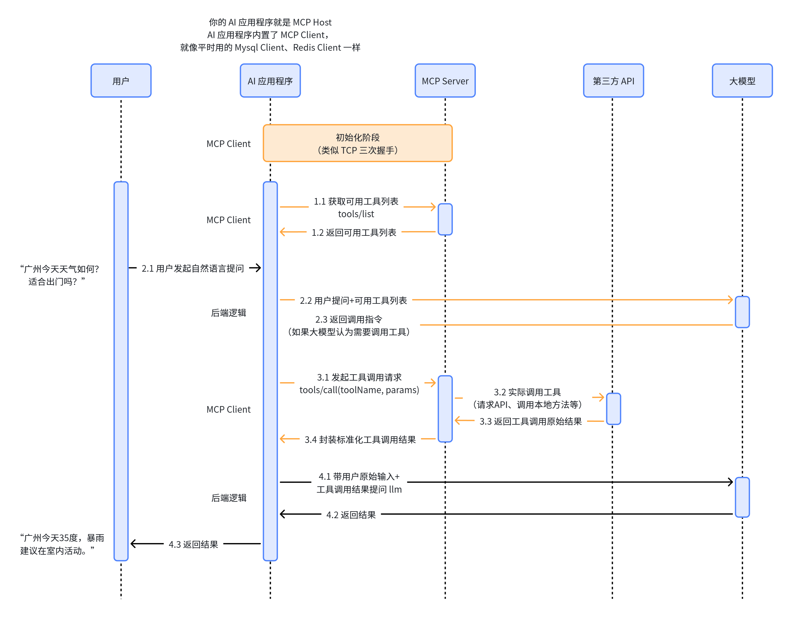

AI相关名词概念的介绍与文档分享，参考堂吉诃德拉曼查的英豪的视频和文档，加上自己的一些整理。
从技术发展逻辑排序：先是大模型本身（LLM、Token），再是如何驾驭模型让它更好输出（Prompt Engineering、Context Engineering、Fine-Tuning），让模型连接外部世界（RAG、Function Call、MCP），然后让模型从”被动问答”走向”自主执行”（Agent、Memory、Agent Skill、Multi-Agent），最后是工程落地（Harness Engineering、WorkFlow）。
LLM（Large Language Model）
LLM 基于 Transformer 架构，在海量互联网文本上进行无监督预训练，学习的任务极其简单——“给定上文，预测下一个词”。通过这种”接龙”式的学习，模型在巨大的参数量（从几亿到数万亿）中隐式地习得了语法、事实知识、推理模式乃至世界常识。当参数规模超过一定阈值，模型还会涌现出小模型不具备的能力。

相关文档：
Token
神经网络无法直接”读”字符，必须把文本转换成数字序列才能输入模型。怎么切、切成多大，直接决定模型效果和计算效率。Tokenizer（分词器）把一段文本切成一个个 Token。Token 可以是完整单词、子词或单个字符。现代模型主流使用子词切分，其中最常用的是 BPE（Byte Pair Encoding，字节对编码）算法：从字符开始，反复合并出现频率最高的相邻字符对，从而在”词表大小”和”覆盖能力”之间取得平衡。中文没有空格天然分词，通常按单字或词组切分，一个汉字大约占 1~2 个 Token。Token 还是两个关键指标的计量单位：模型的上下文窗口长度（如”128K 上下文”指 12.8 万 Token）和 API 的计费。
相关文档：
- Hugging Face Transformers：分词算法总结 —— BPE、Unigram、WordPiece 三种主流算法的官方讲解
- CS336-1 文本编码与 Tokenizer
- Hugging Face LLM 课程第 6 章
Prompt Engineering
模型的推理能力是固定的，但同一道题，指令怎么措辞、怎么组织，输出质量可能天差地别。提示词工程就是在不改模型的前提下，通过设计输入文本稳定地拿到高质量输出。
LLM 在预训练时学会了”跟随”能力，因此提示词的结构会直接影响结果。常用技巧包括：角色设定（”你是一位资深律师”）、清晰的任务描述（说清输入、输出、格式）、Few-shot 示例（给几个输入输出对，让模型模仿）、思维链（Chain-of-Thought，让模型”一步步思考”再给结论）、约束输出格式（JSON、Markdown 等）。通俗地说，同样是问一道数学题，”直接把答案写在纸上”和”扮演老师，分步骤讲解思路”得到的体验完全不同——提示词工程就是教你怎么”问”。
相关文档：
Prompt Engineering Guide（DAIR.AI） —— 提示词技术手册，覆盖 Zero-shot、Few-shot、CoT、ReAct 等几乎所有进阶技术
Context Engineering
Context Engineering，”上下文工程”。这是近年从提示词工程发展出的新概念，Anthropic 官方明确称之为”提示词工程的自然演进”。
由于模型的上下文窗口有限，”Lost in the Middle”发现模型对上下文的开头和结尾更敏感，中间部分容易被”遗忘”。什么信息该放进去、放多少、放哪里，直接决定了输出质量——这就是上下文工程要解决的问题。

与提示词工程关注怎么写好指令不同，上下文工程关注的是采样时进入上下文窗口的那一整套信息的整体编排，包括系统指令、工具定义、检索到的资料、历史对话等。核心手段有：信息放置位置（重要内容放开头或结尾）、去重与压缩（Compaction，把临近超限的对话总结成摘要放进新窗口）、按需检索（只在需要时把外部资料拉进上下文）、结构化标签（用 XML/Markdown 划分段落），就像考试前会把”重点笔记”按重要程度整理好放在最显眼处，而不是把整本教材堆在桌上。它和后面的 RAG、Memory 在技术上是互相配合的。
相关文档分享：
Anthropic：Effective context engineering for AI agents —— 讲了压缩、笔记、子代理三种长任务方案
https://mp.weixin.qq.com/s/KbviOJ6q-K4ik_wzsUs2dw?open_in_browser=true
Fine-Tuning
Fine-Tuning，包括 SFT（Supervised Fine-Tuning，监督微调）、PEFT（Parameter-Efficient Fine-Tuning，参数高效微调）等。微调是在已经预训练好的模型基础上，用某个任务的高质量标注数据继续训练、更新模型权重，让模型”记住”特定领域的模式。全参数微调成本极高（GPT-3 有 1750 亿参数），因此诞生了 LoRA（Low-Rank Adaptation）等参数高效微调方法：冻结原有参数不动，只训练一小部分额外引入的低秩矩阵，训练成本降低上万倍，效果却与全量微调相当。举例子来说，预训练模型像一个”通用实习生”，微调就是把他送去法务部门培训三个月，变成专精的”法务模型”。需要区分的是：微调是改权重，RAG 是”开卷查资料”（不改权重），两者解决的问题不同、经常结合使用。

相关文档分享：
- Hugging Face PEFT 文档 —— 参数高效微调工具库，LoRA、QLoRA 等方法的官方教程
- LoRA 论文：Low-Rank Adaptation of Large Language Models
RAG（Retrieval-Augmented Generation）
LLM 的知识只到训练截止日期，会过时；遇到不了解的内容会”一本正经地胡说八道”（幻觉）；更重要的是，它完全不了解你的私有数据（公司文档、个人笔记）。重新训练不现实，于是有了”外部挂载知识库”的方案。
RAG 分三步。1）索引：把知识文档切块（Chunk），用 Embedding 模型把每块转成向量，存入向量数据库；2）检索：用户提问时，把问题也转成向量，在向量库里找出语义最相似的若干块；3）生成：把检索到的资料和问题一起拼进提示词，让模型”基于这些资料”作答，这样大幅降低了幻觉、答案有出处可查，而且知识更新只需换库，不需要重新训练。

相关文档：
Function Call
Function Call使模型能够与外部系统接口，并访问其训练数据之外的数据。开发者先把”函数”声明给模型，每个函数包含名称、功能描述和参数格式（JSON Schema）。模型在需要时输出一个结构化的调用请求（函数名 + 参数），而不是真的去执行代码；由你的程序真正执行这个函数，再把结果回传给模型，模型基于结果组织最终回答。关键点在于：模型只负责”提出调用请求”，执行权始终在程序手里，所以安全可控，这也是 Agent 能够自主完成任务的核心基础之一。例如问”北京现在几点”，模型并不会看表，而是生成一个 get_current_time("北京") 的调用请求，由你的程序去取时间后回答它。

相关文档：
- OpenAI：函数调用指南 —— 官方最完整的教程，含工具定义、调用流程、最佳实践
MCP（Model Context Protocol）
Model Context Protocol即”模型上下文协议”，由 Anthropic 于 2024 年底提出并开源，OpenAI 等厂商也陆续支持。没有该标准之前，每接一个工具（数据库、文件系统、日历、第三方 API）都要为不同的模型和框架分别写适配层，集成高度”碎片化”。MCP 提供了一套开放的统一标准，让工具”一次接入，处处可用”。
MCP 把”AI 应用要连接的各种资源”标准化。架构分三层：Host（宿主，如 Claude 桌面端、各种 Agent 框架，负责管理连接）、Client（与 Server 建立一对一会话的通信组件）、Server（把具体工具、数据源、提示词模板暴露给模型）。Client 与 Server 之间通过类似 JSON-RPC 的消息传递数据，提供三类能力：工具（可调用的动作）、资源（可读取的数据）、提示词（可复用的指令模板）。最形象的类比是 USB-C：以前每个设备一根专用充电线，现在一根线通用——MCP 就是 AI 世界的 USB-C。

相关文档：
- MCP 官方网站 modelcontextprotocol.io —— 协议规范、架构说明、入门教程
- Anthropic 发布 MCP 的官方博客
Agent
单次问答只能完成一步，但很多真实任务需要”规划多步、反复调用工具、根据中间结果调整策略”。比如订机票要查航班、比价格、下单、发确认邮件。Agent 让模型从”只会答话的chatbot”变成”会自己想办法的执行者”。
Agent 的核心是 LLM + 规划（Planning）+ 工具调用（Tool Use）+ 记忆（Memory） 组成的循环，最经典的范式是 ReAct（Reasoning + Acting，推理 + 行动）：模型先”思考当前状态”→”决定采取行动”（如调用工具）→”观察工具返回结果”→再思考，如此循环直到完成任务。Anthropic 对 Agent 的简洁定义是”自主使用工具循环的 LLM“（LLMs autonomously using tools in a loop）。通俗地说，Agent 就像一位管家：你说”帮我安排下周去上海出差”，他自己拆解任务、订酒店、查高铁、整理行程，中途遇到航班取消还能自动改签。
相关文档：
- Anthropic：Building Effective Agents —— 定义了工作流与 Agent 的区别和五种经典模式
- 深入理解 AI Agent：设计原理与工程实践
- Lilian Weng：LLM Powered Autonomous Agents
- OpenAI Agents SDK —— 官方轻量 Agent 框架
- Tw93 on X: “https://t.co/x9eqpjrSuS" / X
- https://medium.com/binome/ai-agent-workflow-design-patterns-an-overview-cf9e1f609696
- https://mp.weixin.qq.com/s/7CZ6cHWQ-T9bmaWoJFwdwA
Agent Skill
Agent Skill把一个领域的”知识 + 流程 + 工具”打包成可复用、可共享的模块，让模型判断何时调用——避免每个项目重复造轮子，也解决”模型什么都会但什么都不精”的问题。
一个 Skill 本质上是一份结构化的技能定义 + 一组支撑文件（使用说明、代码、示例数据）。它比单个 Function 更完整：Function 只暴露一个接口，Skill 还附带”怎么用它完成任务”的知识。模型通过技能的描述（Manifest，相当于使用说明书）自主决定何时启用它。Skill 与 MCP 是互补关系：**Skill 提供”知识和用法”，MCP 提供”底层工具通道”**——一个决定”做什么、怎么做”，一个解决”怎么连上”。
相关文档：
- OpenAI Agents SDK（含 Skills 功能说明） —— 官方开源框架，可在其文档与示例中查看 Skill 的定义、组织与使用方式
Multi-Agent
Multi-Agent（System），指多个 Agent 协作完成任务的架构。单个 Agent 处理超大任务时上下文会迅速爆满、能力单一、相互干扰。把一个难题拆给多个”各司其职”的 Agent，像真实团队一样分工协作，是扩展能力上限的关键路径。
多个 Agent 各扮演一个角色（产品经理、工程师、测试），通过消息传递共享信息、交换成果、互相评审。编排模式常见三种：主管-下属（Orchestrator-Worker）——一个主 Agent 拆解任务、派给多个子 Agent 并行执行并汇总结果，这是最主流的模式；群聊（Conversation）——多个 Agent 自由讨论协作；流水线/层级结构——按顺序或层级传递工作。Anthropic 的 Research 功能就是一个经典案例：一个主研究员 Agent 规划研究计划，生成多个并行搜索的子 Agent，每个子 Agent 用独立上下文窗口做深度检索后只把精华摘要回传，主 Agent 汇总并让引用 Agent 标注出处——实测比单 Agent 提升了约 90% 的评测分数。
相关文档：
- Anthropic：How we built our multi-agent research system —— 多智能体系统的生产级实战复盘，含架构、提示词、评估、可靠性四大部分
- CrewAI 文档 —— 主打”角色扮演式”多智能体协作的轻量框架
- Microsoft AutoGen —— 微软开源的通用多智能体框架
Harness Engineering
Agent 在真实环境里很容易失控——反复循环停不下来、上下文越滚越大、工具调用出错、出了问题还说不清为什么。这些问题靠”调模型”或”写提示词”都解决不了，必须靠模型周围的工程基础设施来兜底。
Harness Engineering 指围绕模型搭建的整套支撑系统，包括：上下文管理（压缩、检索、重写）、工具接入（MCP Server）、递归与循环控制（设置最大步数、防止 Agent 无限自嗨）、沙箱与权限隔离、重试与容错、日志与可观测性（出问题能回放定位）、评估系统（用评测集衡量每次改动）。命名来源：harness 原意是马的”挽具”或电缆的”束线”，即”把力量约束到可用的方向上”。最贴切的类比是：模型是发动机，Harness 是底盘、油箱、仪表盘和刹车——没有这些，再强的发动机也开不上路。
相关文档：
- Anthropic：How we built our multi-agent research system —— “生产可靠性与工程挑战”一节就是 Harness Engineering 的完整案例（重试、检查点、彩虹部署、可观测性、LLM-as-judge 评估）
WorkFlow
Agent 完全自主虽然灵活，但不可控、成本高（多智能体系统 Token 消耗常是普通聊天的 15 倍）、结果不稳定。很多场景其实不需要”自由发挥”，只需要确定性的流程——这时候用工作流更稳、更省、更好调试。
工作流把任务拆成预定义的步骤、分支和状态，按固定路径执行，每一步可以调用模型或工具。Anthropic 给出了五种经典模式：Prompt Chaining（顺序链，每步处理上一步输出，中间可加校验）、Routing（路由，按输入分类分流到不同处理）、Parallelization（并行，分块并行或多次投票）、Orchestrator-Workers（编排者-工人，动态拆任务派发并行）、Evaluator-Optimizer（评估-优化循环，一个生成一个评审反复迭代）。关键的区分是：**工作流是”预定义的代码路径”，Agent 是”模型自己决定路径”**。Anthropic 的建议是：能用简单方案就不要上复杂架构，能预判步骤的任务用工作流，开放式、步骤无法预判的任务才需要 Agent。通俗地说，工作流像工厂流水线——工序固定、稳定可控；Agent 像自由职业者——灵活多变但不可控。两者不是对立而是互补，可以组合使用。
相关文档：
- Anthropic：Building Effective Agents —— 工作流五种模式的出处，也是选择”用工作流还是用 Agent”的最佳决策参考